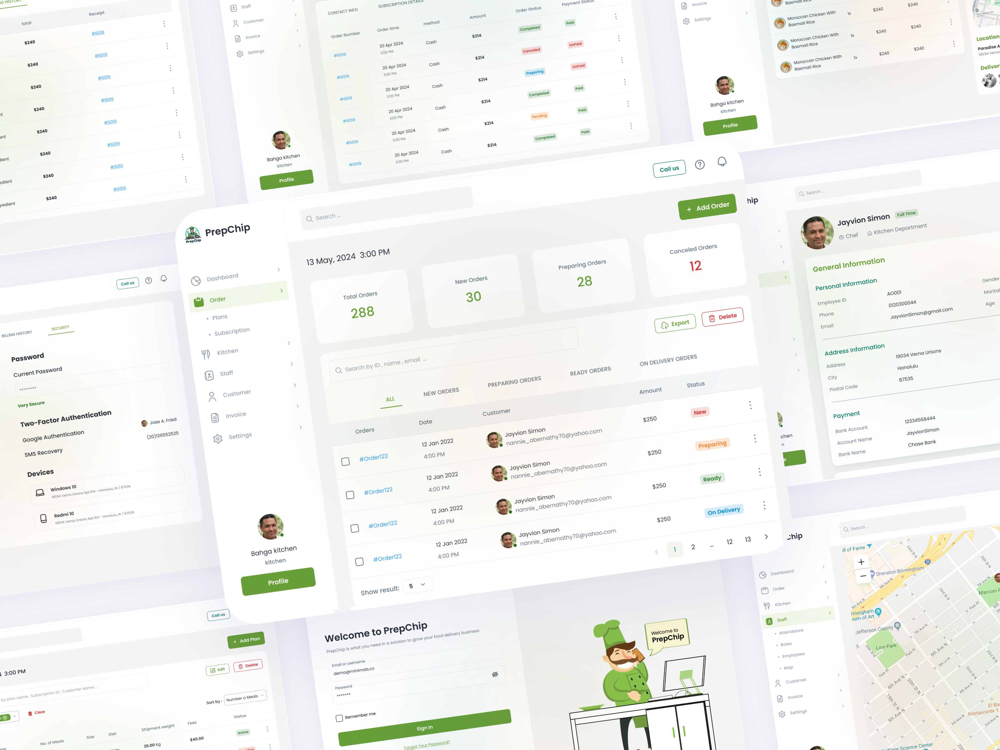

PrepChip Meal Prep SaaS: Unifying Multi-Role Commercial Kitchen Operations
I designed an end-to-end B2B meal-preparation SaaS platform, benchmarking market competitors to build a scalable design system and role-based dashboards for Admins, Chefs, and Kitchen Staff.

Context & Scope
PrepChip is a commercial kitchen and meal-preparation SaaS platform built to manage recipes, weekly meal plans, and daily production. The challenge was uniting three distinct user roles (Admins, Chefs, and Staff) inside one platform without cluttering the interface.
- Conducted a competitor analysis across 4 market players to identify usability gaps and simplify complex meal-planning journeys.
- Designed a unified platform with Role-Based Access Control (RBAC), customizing views and permissions for each user type.
- Streamlined end-to-end kitchen workflows from menu creation and ingredient scaling to daily prep and order fulfillment.
- Built and maintained a scalable design system and component library to support multi-role interfaces.
User Experience Barriers & Business Impact
- Complex meal-planning journeys:Commercial kitchens struggled with fragmented workflows, jumping between spreadsheets and disconnected tools to plan menus, scale ingredients, and track orders.
- Multi-role clutter: Showing the exact same dashboard to Admins, Chefs, and Staff created friction—users had to dig through irrelevant features to find their daily tasks.
- Rigid competitor tools:Benchmarking 4 competitors revealed overly dense, outdated interfaces with steep learning curves for kitchen staff.
- Inconsistent system scaling:Without a shared design system, building custom views for different user roles risked fragmenting the product experience.
Insight 01: Competitor Platforms Made Meal Planning Harder Than Needed
Analyzing 4 competing tools showed that users got lost in deep menus when trying to build weekly meal plans and calculate ingredient portions and Customizing dashboards for multiple roles risked UI inconsistencies and duplicated engineering effort..
- Decision (Streamlined Meal-Planning Flows): Simplified the user journey into a clear, step-by-step workflow for recipe creation, automatic portion scaling, and schedule assignment.
- Decision (Scalable Design System & Component Library): Built a centralized design system with reusable components, data tables, and design tokens to keep every role view consistent and easy to scale.

Insight 02: Different Kitchen Roles Needed Tailored Views, Not Separate Products
Admins, Chefs, and Kitchen Staff have completely different daily priorities, yet they all rely on the same live operational data.
- Decision (Role-Based Access Control): Designed a unified system architecture with customizable feature permissions, adapting the interface to each user's role without fragmenting the platform.
- Decision (Role-Based Access Control): Tailored the views so Admins manage business operations and permissions, Chefs control recipes and prep schedules, and Staff focus on daily kitchen checklists.
Workflow & Usability Validation
To ensure the platform simplified daily operations across every kitchen role, we validated interactive prototypes against real meal-prep scenarios:
- Evaluation: Tested core user journeys across all three roles—configuring role permissions, planning a weekly menu, and tracking daily kitchen prep.
- Result: Customizing dashboard views by role eliminated visual clutter and allowed each team member to complete tasks faster within a single shared platform.
- Launch: Delivered a complete, production-ready SaaS design backed by a documented design system and reusable component library.
Bringing PrepChip to Life
Delivering a Unified, Role-Based Meal Prep SaaS Platform
- Admin & Permissions Dashboard: Centralized control over kitchen operations, orders, user management, and role-based permissions.
- Chef & Menu Planning Hub: Intuitive recipe builder, portion scaling, nutritional breakdown, and weekly meal scheduling.
- Staff Production View: Clean, action-focused daily prep lists, ingredient batching, and order packaging queues.
- Design System & Component Library: Scalable UI foundations, tokens, and modular components powering all role interfaces.
Key Takeaways
PrepChip was the first time I built a complete design system with reusable components, and not just a set of screens. The platform serves three roles (admins, chefs, and staff), so each component had to work across different permissions and tasks without turning into separate designs for each role.
Building the system first made every new screen faster and more consistent, and it taught me to think in patterns and variants before drawing pages.